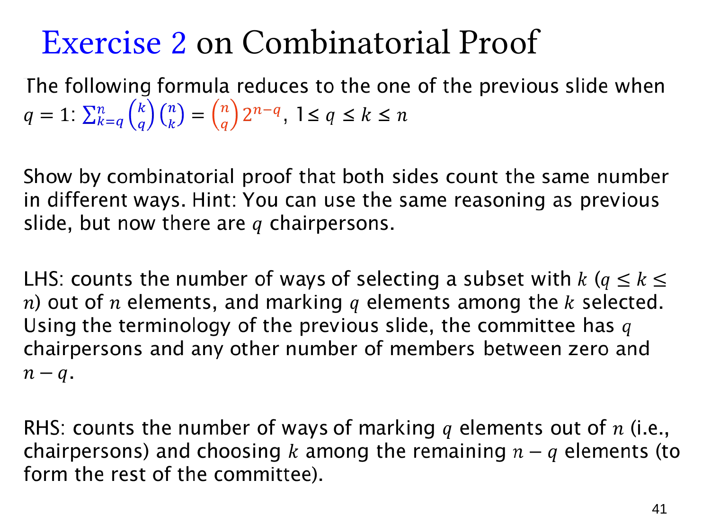

L1.7 · 第 41 页讲解原文
查看这一页课件

多位主席：加权恒等式的一般形式
这一页把上一页“一位主席”的计数推广到 q 位主席：
k=q∑n(qk)(kn)=(qn)2n−q,1≤q≤n.
这里的主席组成一个没有内部职位区别的 q 人集合；不把他们编号为第一、第二主席。
共同计数的对象是：从 n 人中选一个委员会，并在其中标记恰好 q 人为主席。
左边先确定委员会大小 k。选出 k 人有 (kn) 种，再从这 k 人中选出 q 位主席有 (qk) 种。委员会至少含 q 人，所以把 k=q,…,n 的情况相加。
右边先从全部 n 人中选 q 位主席，有 (qn) 种。剩下 n−q 人各自决定加入或不加入委员会，因此有 2n−q 种其余成员集合。主席全部必须在委员会内，其余成员可以为空。
课件末句“choosing k among the remaining n−q elements”容易误解。右边的因子 2n−q 实际表示选择任意子集；若固定总委员会大小为 k，应从剩余人中选 k−q 人，而不是 k 人。
也可逐项验证：
(kn)(qk)=(qn)(k−qn−q).
对 k 求和后，剩余组合数之和为 2n−q。当 q=1 时，(1k)=k、(1n)=n，就恢复上一页的公式。